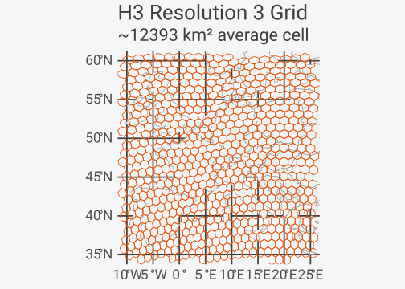
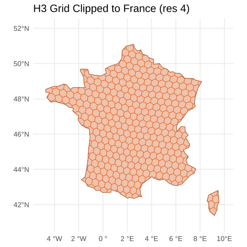
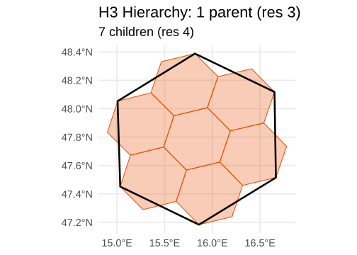
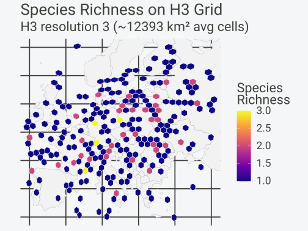

hexify v0.5.0 adds H3 as a
first-class grid type alongside ISEA. Every core function
(hexify(), grid_rect(),
grid_clip(), get_parent(),
get_children()) works with both grid systems through the
same interface.
Installation
# Install from CRAN
install.packages("hexify")
# Or install development version from GitHub
# install.packages("pak")
pak::pak("gcol33/hexify")What is H3?
H3 is a hierarchical hexagonal grid system developed by Uber. It
partitions Earth’s surface into hexagonal cells at 16 resolutions
(0–15), each roughly
7
finer than the last. Cell IDs are 64-bit integers encoded as hexadecimal
strings (e.g., "8528342bfffffff").
H3 is widely adopted: the FCC uses it for broadband mapping, Foursquare for POI analytics, and DuckDB/BigQuery both have native H3 extensions.
Key difference from ISEA: H3 cells are not
equal-area. Hexagon area varies by about a factor of 2 between the
largest and smallest cell at any given resolution, and by about 2.4 once
the twelve pentagons are counted. The variation follows position on the
icosahedron rather than latitude: at resolution 3 the hexagons within 5
degrees of a face centre average 9308
km,
against 12406
km
for those more than 30 degrees away. For rigorous equal-area analysis,
use ISEA. For interoperability with H3 ecosystems, use
type = "h3".
Getting Started
Create an H3 grid by passing type = "h3" to
hex_grid():
library(sf)
#> Linking to GEOS 3.14.1, GDAL 3.12.1, PROJ 9.7.1; sf_use_s2() is TRUE
library(ggplot2)
# Create an H3 grid specification
grid_h3 <- hex_grid(resolution = 5, type = "h3")
#> H3 cells are not exactly equal-area; hexagon area varies ~2x within a resolution.
#> This message is displayed once per session.
grid_h3
#> HexGridInfo Specification [H3]
#> -------------------------------
#> Grid Type: H3 (Uber)
#> Resolution: 5
#> Avg Area: 252.9040 km^2 (varies by location)
#> Avg Diagonal:17.09 km
#> CRS: EPSG:4326
#> Total Cells: 2016842
#> Note: H3 cells are NOT exactly equal-areaThen use hexify() with the grid object, just like
ISEA:
# Sample cities
cities <- data.frame(
name = c("Vienna", "Paris", "Madrid", "Berlin", "Rome",
"London", "Prague", "Warsaw", "Budapest", "Amsterdam"),
lon = c(16.37, 2.35, -3.70, 13.40, 12.50,
-0.12, 14.42, 21.01, 19.04, 4.90),
lat = c(48.21, 48.86, 40.42, 52.52, 41.90,
51.51, 50.08, 52.23, 47.50, 52.37)
)
result <- hexify(cities, lon = "lon", lat = "lat", grid = grid_h3)
result
#> HexData Object
#> --------------
#> Rows: 10
#> Columns: 3
#> Cells: 10 unique
#> Type: data.frame
#>
#> Grid:
#> H3 Resolution 5 (~252.9040 km^2 avg)
#>
#> Columns: name, lon, lat
#>
#> Data preview (with cell assignments):
#> name lon lat cell_id
#> Vienna 16.37 48.21 851e15b7fffffff
#> Paris 2.35 48.86 851fb467fffffff
#> Madrid -3.70 40.42 85390ca3fffffff
#> ... with 7 more rowsH3 cell IDs are character strings, unlike ISEA’s numeric IDs:
# Cell IDs are hexadecimal strings
result@cell_id
#> [1] "851e15b7fffffff" "851fb467fffffff" "85390ca3fffffff" "851f1d4bfffffff"
#> [5] "851e8053fffffff" "85194ad3fffffff" "851e3543fffffff" "851f53cbfffffff"
#> [9] "851e037bfffffff" "85196953fffffff"
# All standard accessors work
cells(result)
#> [1] "851e15b7fffffff" "851fb467fffffff" "85390ca3fffffff" "851f1d4bfffffff"
#> [5] "851e8053fffffff" "85194ad3fffffff" "851e3543fffffff" "851f53cbfffffff"
#> [9] "851e037bfffffff" "85196953fffffff"
n_cells(result)
#> [1] 10Choosing Resolution by Area
If you think in terms of cell area rather than resolution numbers,
pass area_km2 instead of resolution. hexify
picks the closest H3 resolution:
grid_area <- hex_grid(area_km2 = 500, type = "h3")
#> Warning in hex_grid(area_km2 = 500, type = "h3"): H3 cells are not exactly
#> equal-area. Closest resolution 5 has average area ~252.904 km^2 (requested
#> 500.000 km^2)
grid_area
#> HexGridInfo Specification [H3]
#> -------------------------------
#> Grid Type: H3 (Uber)
#> Resolution: 5
#> Avg Area: 252.9040 km^2 (varies by location)
#> Avg Diagonal:17.09 km
#> CRS: EPSG:4326
#> Total Cells: 2016842
#> Note: H3 cells are NOT exactly equal-areaGrid Generation
All grid generation functions work with H3 grids.
Rectangular Region
# Generate H3 hexagons over Western Europe
grid_h3 <- hex_grid(resolution = 3, type = "h3")
europe_h3 <- grid_rect(c(-10, 35, 25, 60), grid_h3)
# Basemap
europe <- hexify_world[hexify_world$continent == "Europe", ]
ggplot() +
geom_sf(data = europe, fill = "gray95", color = "gray60") +
geom_sf(data = europe_h3, fill = NA, color = "#E6550D", linewidth = 0.4) +
coord_sf(xlim = c(-10, 25), ylim = c(35, 60)) +
labs(title = sprintf("H3 Resolution %d Grid", grid_h3@resolution),
subtitle = sprintf("~%.0f km² average cell", grid_h3@area_km2)) +
theme_minimal(base_size = FIG_BASE_SIZE)
Clipping to a Boundary
# Clip H3 grid to France
france <- hexify_world[hexify_world$name == "France", ]
grid_h3 <- hex_grid(resolution = 4, type = "h3")
france_h3 <- grid_clip(france, grid_h3)
#> Spherical geometry (s2) switched off
#> although coordinates are longitude/latitude, st_intersection assumes that they
#> are planar
#> Spherical geometry (s2) switched on
ggplot() +
geom_sf(data = france, fill = "gray95", color = "gray40", linewidth = 0.5) +
geom_sf(data = france_h3, fill = alpha("#E6550D", 0.3),
color = "#E6550D", linewidth = 0.3) +
coord_sf(xlim = c(-5, 10), ylim = c(41, 52)) +
labs(title = sprintf("H3 Grid Clipped to France (res %d)", grid_h3@resolution)) +
theme_minimal(base_size = FIG_BASE_SIZE)
Hierarchical Navigation
H3’s killer feature is its clean hierarchical structure: every cell
has exactly one parent and seven children. hexify exposes this with
get_parent() and get_children().
Parents
# Get parent cells (one resolution coarser)
grid_h3 <- hex_grid(resolution = 5, type = "h3")
child_ids <- lonlat_to_cell(
lon = c(16.37, 2.35, 13.40),
lat = c(48.21, 48.86, 52.52),
grid = grid_h3
)
parent_ids <- get_parent(child_ids, grid_h3, levels = 1)
data.frame(child = child_ids, parent = parent_ids)
#> child parent
#> 1 851e15b7fffffff 841e15bffffffff
#> 2 851fb467fffffff 841fb47ffffffff
#> 3 851f1d4bfffffff 841f1d5ffffffffChildren
# Get children of a single cell (one resolution finer)
grid_coarse <- hex_grid(resolution = 3, type = "h3")
coarse_id <- lonlat_to_cell(16.37, 48.21, grid_coarse)
children <- get_children(coarse_id, grid_coarse, levels = 1)
cat(length(children[[1]]), "children at resolution", grid_coarse@resolution + 1, "\n")
#> 7 children at resolution 4
head(children[[1]])
#> [1] "841e151ffffffff" "841e153ffffffff" "841e155ffffffff" "841e157ffffffff"
#> [5] "841e159ffffffff" "841e15bffffffff"Visualizing the Hierarchy
# Parent cell polygon
parent_poly <- cell_to_sf(coarse_id, grid_coarse)
# Children cell polygons
grid_fine <- hex_grid(resolution = 4, type = "h3")
children_poly <- cell_to_sf(children[[1]], grid_fine)
ggplot() +
geom_sf(data = children_poly, fill = alpha("#E6550D", 0.3),
color = "#E6550D", linewidth = 0.5) +
geom_sf(data = parent_poly, fill = NA, color = "black", linewidth = 1.2) +
labs(title = sprintf("H3 Hierarchy: 1 parent (res %d)", grid_coarse@resolution),
subtitle = sprintf("%d children (res %d)",
length(children[[1]]), grid_fine@resolution)) +
theme_minimal(base_size = FIG_BASE_SIZE)
Working with H3 Data
The same hexify workflow applies. Species observations across Europe, aggregated into H3 cells:
set.seed(42)
# Simulate observations across Europe
obs <- data.frame(
lon = c(rnorm(200, 10, 12), rnorm(100, 25, 8)),
lat = c(rnorm(200, 48, 6), rnorm(100, 55, 4)),
species = sample(c("Sp. A", "Sp. B", "Sp. C"), 300, replace = TRUE)
)
obs$lon <- pmax(-10, pmin(40, obs$lon))
obs$lat <- pmax(35, pmin(65, obs$lat))
# Hexify with H3
grid_h3 <- hex_grid(resolution = 3, type = "h3")
obs_hex <- hexify(obs, lon = "lon", lat = "lat", grid = grid_h3)
# Aggregate: species richness per cell
obs_df <- as.data.frame(obs_hex)
obs_df$cell_id <- obs_hex@cell_id
richness <- aggregate(species ~ cell_id, data = obs_df,
FUN = function(x) length(unique(x)))
names(richness)[2] <- "n_species"
# Map it
polys <- cell_to_sf(richness$cell_id, grid_h3)
polys <- merge(polys, richness, by = "cell_id")
europe <- hexify_world[hexify_world$continent == "Europe", ]
ggplot() +
geom_sf(data = europe, fill = "gray95", color = "gray70", linewidth = 0.2) +
geom_sf(data = polys, aes(fill = n_species), color = "white", linewidth = 0.3) +
scale_fill_viridis_c(option = "plasma", name = "Species\nRichness") +
coord_sf(xlim = c(-10, 40), ylim = c(35, 65)) +
labs(title = "Species Richness on H3 Grid",
subtitle = sprintf("H3 resolution %d (~%.0f km² avg cells)",
grid_h3@resolution, grid_h3@area_km2)) +
theme_minimal(base_size = FIG_BASE_SIZE) +
theme(axis.text = element_blank(), axis.ticks = element_blank())
ISEA–H3 Crosswalk
h3_crosswalk() (v0.6.0) maps between ISEA and H3 cell
IDs in both directions. If you run your analysis on ISEA but
collaborators expect H3 cell IDs, this bridges the two.
# Start with an ISEA grid and some cells
grid_isea <- hex_grid(resolution = 9, aperture = 3)
isea_ids <- lonlat_to_cell(
lon = c(16.37, 2.35, 13.40, -3.70, 12.50),
lat = c(48.21, 48.86, 52.52, 40.42, 41.90),
grid = grid_isea
)
# Map ISEA cells to their closest H3 equivalents
xw <- h3_crosswalk(isea_ids, grid_isea)
xw[, c("isea_cell_id", "h3_cell_id", "isea_area_km2", "h3_area_km2")]
#> isea_cell_id h3_cell_id isea_area_km2 h3_area_km2
#> 1 42280 841e15bffffffff 2591.402 1753.173
#> 2 39597 841fb43ffffffff 2591.402 1569.204
#> 3 40823 841f1d5ffffffff 2591.402 1570.136
#> 4 39585 84390cbffffffff 2591.402 1819.493
#> 5 42516 841e80dffffffff 2591.402 1885.191The area_ratio column shows how ISEA and H3 cell sizes
compare; values close to 1 mean the resolutions are well-matched.
ISEA vs H3: When to Use Which
| ISEA | H3 | |
|---|---|---|
| Cell area | Exactly equal | ~2 variation (~2.4 with pentagons) |
| Cell IDs | Numeric (integer) | Character (hex string) |
| Apertures | 3, 4, 7, 4/3 | Fixed (7) |
| Resolutions | 0–30 | 0–15 |
| Hierarchy | Approximate (aperture-dependent) | Exact (7 children per parent) |
| Dependencies | None (built-in C++) | None (vendored H3 C library) |
| Industry adoption | Scientific / government | Tech industry / commercial |
Use ISEA when:
Equal-area cells are required (biodiversity surveys, density estimation, statistical sampling)
You need fine control over aperture and resolution
No external dependencies are acceptable
Use H3 when:
Interoperability with H3 ecosystems (Uber, Foursquare, DuckDB, BigQuery)
Clean hierarchical operations (parent/child traversal) are a priority
Slight area variation across latitudes is acceptable for your analysis
Resolution Reference
h3_res <- hexify_compare_resolutions(type = "h3", res_range = 0:15)
h3_res$n_cells_fmt <- ifelse(
h3_res$n_cells > 1e9,
sprintf("%.1fB", h3_res$n_cells / 1e9),
ifelse(h3_res$n_cells > 1e6,
sprintf("%.1fM", h3_res$n_cells / 1e6),
ifelse(h3_res$n_cells > 1e3,
sprintf("%.1fK", h3_res$n_cells / 1e3),
as.character(h3_res$n_cells)))
)
# Use scientific notation for tiny areas, fixed for larger ones
h3_res$area_fmt <- ifelse(
h3_res$cell_area_km2 < 0.1,
formatC(h3_res$cell_area_km2, format = "e", digits = 1),
formatC(h3_res$cell_area_km2, format = "f", digits = 1, big.mark = ",")
)
h3_res$spacing_fmt <- ifelse(
h3_res$cell_spacing_km < 0.1,
formatC(h3_res$cell_spacing_km, format = "e", digits = 1),
formatC(h3_res$cell_spacing_km, format = "f", digits = 1)
)
knitr::kable(
h3_res[, c("resolution", "n_cells_fmt", "area_fmt", "spacing_fmt")],
col.names = c("Resolution", "# Cells", "Avg Area (km\u00b2)", "Spacing (km)"),
align = c("r", "r", "r", "r")
)| Resolution | # Cells | Avg Area (km²) | Spacing (km) |
|---|---|---|---|
| 0 | 122 | 4,357,449.4 | 2243.1 |
| 1 | 842 | 609,788.4 | 839.1 |
| 2 | 5.9K | 86,801.8 | 316.6 |
| 3 | 41.2K | 12,393.4 | 119.6 |
| 4 | 288.1K | 1,770.3 | 45.2 |
| 5 | 2.0M | 252.9 | 17.1 |
| 6 | 14.1M | 36.1 | 6.5 |
| 7 | 98.8M | 5.2 | 2.4 |
| 8 | 691.8M | 0.7 | 0.9 |
| 9 | 4.8B | 0.1 | 0.3 |
| 10 | 33.9B | 1.5e-02 | 0.1 |
| 11 | 237.3B | 2.2e-03 | 5.0e-02 |
| 12 | 1661.0B | 3.1e-04 | 1.9e-02 |
| 13 | 11626.7B | 4.4e-05 | 7.1e-03 |
| 14 | 81386.8B | 6.3e-06 | 2.7e-03 |
| 15 | 569707.4B | 9.0e-07 | 1.0e-03 |
See Also
vignette("quickstart")- Getting started with hexify (ISEA-focused)vignette("workflows")- Grid generation, multi-resolution analysis, GIS exportvignette("visualization")- Plotting withplot(),hexify_heatmap()vignette("theory")- Mathematical foundations of the ISEA projection